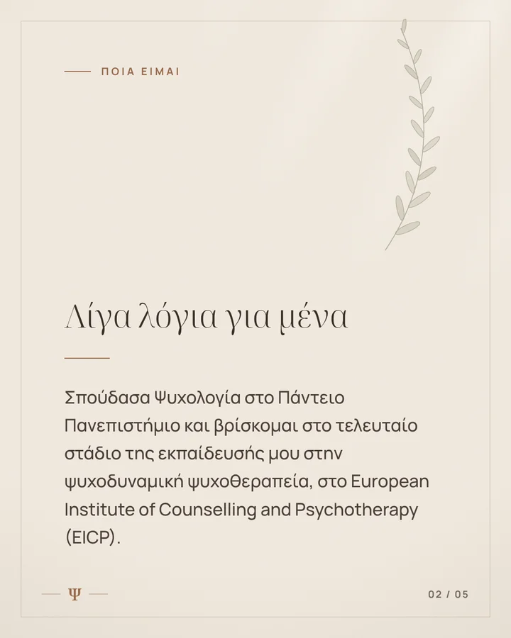
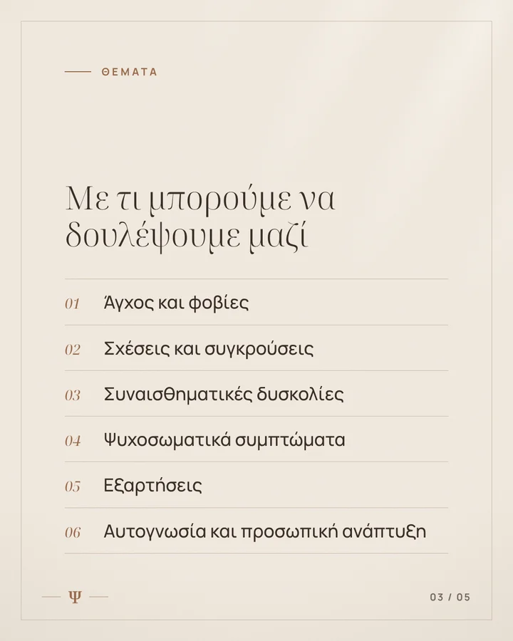
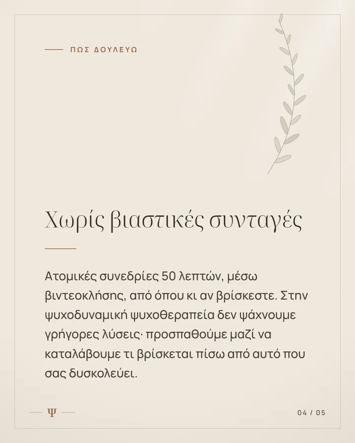
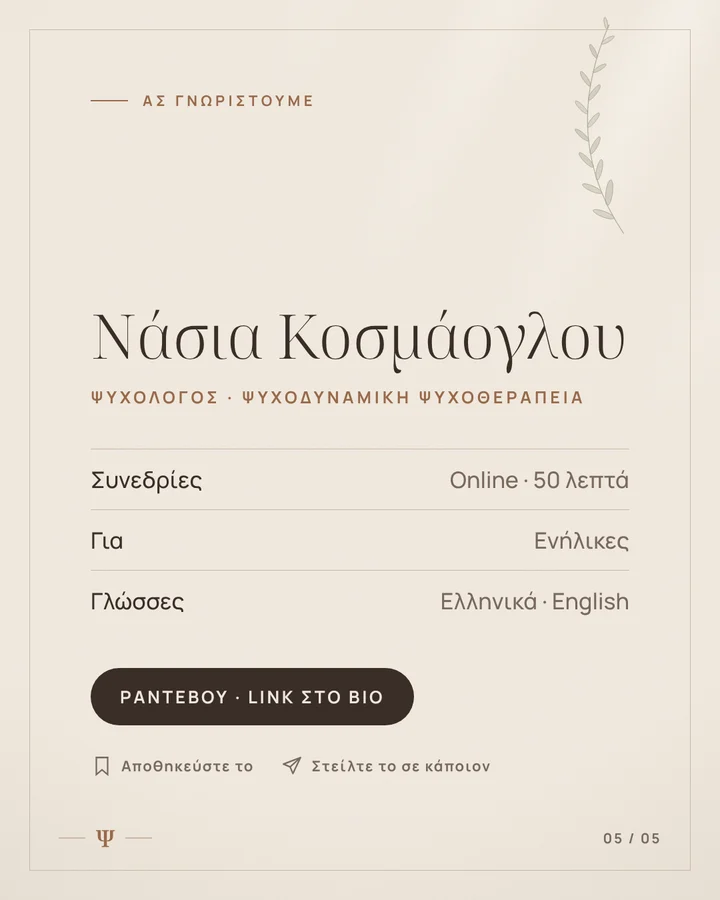

Ετοιμάσαμε ολόκληρο τον πρώτο μήνα στο ύφος που ήδη έχει το προφίλ σας: ζεστές γήινες αποχρώσεις, ήρεμη τυπογραφία, το Ψ σας. Δείτε κάθε ανάρτηση όπως θα εμφανίζεται στο Instagram, με τη λεζάντα της.
Η πρόταση
Πακέτο Βασικό
49€/ μήνα + ΦΠΑ (σύνολο 60,76€)
8 αναρτήσεις τον μήνα (2 την εβδομάδα)
6 σχεδιασμένα posts και carousels στο ύφος σας
2 reels με υπότιτλους
Λεζάντες και στοχευμένα hashtags σε κάθε ανάρτηση
Δημοσίευση τις ώρες που το κοινό σας είναι πιο ενεργό
Τακτοποίηση προφίλ στην αρχή: bio, link, εξώφυλλα highlights
Σύντομη γραπτή αναφορά κάθε μήνα
01Χωρίς κόστος ρύθμισης.
02Χωρίς δέσμευση: σταματάτε όποτε θέλετε, με ένα μήνυμα.
03Βλέπετε ολόκληρο τον μήνα πριν πληρώσετε, και πληρώνετε μόνο αφού τον εγκρίνετε.
04Πληρωμή με τραπεζική κατάθεση και τιμολόγιο, κάθε μήνα πριν ξεκινήσει.
05Ο λογαριασμός μένει 100% δικός σας. Δεν χρειαζόμαστε κανέναν κωδικό.
Τι χρειαζόμαστε από εσάς
Τρία βήματα, περίπου 3 λεπτά
1
Επαγγελματικός λογαριασμός
Στο Instagram: Ρυθμίσεις → Τύπος λογαριασμού και εργαλεία → Μετάβαση σε επαγγελματικό λογαριασμό. Αν βλέπετε ήδη «Επαγγελματικός πίνακας ελέγχου» στο προφίλ σας, είναι έτοιμο.
≈ 1 λεπτό
2
Έγκριση πρόσβασης συνεργάτη
Σας στέλνουμε αίτημα από τον επαγγελματικό λογαριασμό της Advon Media και απλώς πατάτε «Έγκριση». Ζητάμε μόνο δημοσίευση περιεχομένου και στατιστικά, ποτέ πληρωμές ή κωδικούς.
≈ 1 λεπτό
3
Ένα μήνυμα ότι έγινε
Μας γράφετε ότι εγκρίνατε το αίτημα, και ξεκινάμε τις δημοσιεύσεις με το πρόγραμμα παρακάτω.
≈ 10 δευτερόλεπτα
Προαιρετικά, αν θέλετε: το link που θέλετε στο bio (π.χ. η σελίδα ραντεβού σας στο doctoranytime), αν έχετε σελίδα στο Facebook (το πακέτο καλύπτει και το Facebook χωρίς επιπλέον χρέωση), και 2–3 φωτογραφίες σας για μελλοντικές αναρτήσεις. Δεν είναι απαραίτητα για να ξεκινήσουμε.
Για να αφαιρέσετε την πρόσβαση οποιαδήποτε στιγμή: Ρυθμίσεις → Συνεργάτες → Advon Media → Αφαίρεση.
Πατήστε σε μια ανάρτηση για να τη δείτε αναλυτικά.
Οι αναρτήσεις
Πρόγραμμα 17 Νοεμβρίου – 11 Δεκεμβρίου
Τρίτη και Παρασκευή, 20:00. Οι ημερομηνίες προσαρμόζονται ανάλογα με το πότε θα ξεκινήσουμε.
Ψnasia.k._psychologist_




01 · Τρίτη 17/11 · 20:00Carousel · 5
Γνωριμία
Γεια σας, είμαι η Νάσια Κοσμάογλου, ψυχολόγος.
Σπούδασα Ψυχολογία στο Πάντειο Πανεπιστήμιο και βρίσκομαι στο τελευταίο στάδιο της εκπαίδευσής μου στην ψυχοδυναμική ψυχοθεραπεία (EICP).
Δουλεύω με ενήλικες, σε ατομικές συνεδρίες 50 λεπτών μέσω βιντεοκλήσης, σε θέματα όπως το άγχος, οι σχέσεις, οι συναισθηματικές δυσκολίες και η αυτογνωσία.
Σε αυτόν τον λογαριασμό θα βρίσκετε σκέψεις και ιδέες από την ψυχοδυναμική ματιά, γραμμένες με απλά λόγια. Αν κάτι από όσα διαβάζετε σας αγγίζει, μπορείτε να μου γράψετε.
Online συνεδρίες · Ραντεβού: link στο bio
Πότε ίσως ήρθε η ώρα να μιλήσετε σε κάποιον;
Δεν χρειάζεται να υπάρχει «σοβαρός λόγος». Πολλές φορές αρκεί η αίσθηση ότι κάτι μέσα μας ζητά χώρο.
Αν αναγνωρίσατε τον εαυτό σας σε κάποιο από αυτά, η ψυχοθεραπεία μπορεί να είναι ένα ασφαλές μέρος για να το εξερευνήσετε.
Online συνεδρίες · Ραντεβού: link στο bio
Τι είναι η ψυχοδυναμική ψυχοθεραπεία;
Είναι μια προσέγγιση που προσπαθεί να καταλάβει τι βρίσκεται πίσω από αυτό που μας δυσκολεύει: τις εμπειρίες, τα μοτίβα και τις ανάγκες που συχνά κινούνται έξω από την επίγνωσή μας.
Δεν δίνει έτοιμες συνταγές. Δίνει χώρο και χρόνο ώστε να γνωρίσετε τον εαυτό σας λίγο καλύτερα, και από εκεί να έρθει η αλλαγή.
Αποθηκεύστε το για να το έχετε, ή στείλτε το σε κάποιον που αναρωτιέται «τι γίνεται τελικά σε μια συνεδρία».
Online συνεδρίες · Ραντεβού: link στο bio
Τι προσπαθεί να σας πει το άγχος;
Συνήθως θέλουμε να το κάνουμε να σωπάσει όσο πιο γρήγορα γίνεται. Κι όμως, το άγχος είναι συχνά ένα μήνυμα: δείχνει κάτι που μας απασχολεί, πριν μπορέσουμε να το πούμε με λόγια.
Στην ψυχοθεραπεία δεν προσπαθούμε μόνο να το μειώσουμε, αλλά και να καταλάβουμε από πού έρχεται.
Αν το άγχος επηρεάζει τον ύπνο, τις σχέσεις ή την καθημερινότητά σας, αξίζει να το συζητήσετε με έναν ειδικό.
Online συνεδρίες · Ραντεβού: link στο bio
Πώς είναι η πρώτη συνεδρία;
Πολλοί άνθρωποι διστάζουν να κλείσουν ραντεβού, γιατί δεν ξέρουν τι θα συναντήσουν. Η πρώτη συνεδρία είναι μια γνωριμία: μιλάτε για ό,τι σας φέρνει, με τον δικό σας ρυθμό, και αποφασίζετε εσείς αν θέλετε να συνεχίσουμε.
Οι συνεδρίες γίνονται online, μέσω βιντεοκλήσης, και διαρκούν 50 λεπτά.
Ραντεβού: link στο bio
Online ψυχοθεραπεία: πέντε ερωτήσεις που μου κάνετε συχνά.
Πώς γίνεται, πόσο διαρκεί, πού πρέπει να βρίσκεστε, αν λειτουργεί και τι γίνεται με το απόρρητο. Τις απαντήσεις θα τις βρείτε στις επόμενες καρτέλες.
Αν έχετε κι άλλη απορία, γράψτε τη στα σχόλια ή στείλτε μου μήνυμα.
Online συνεδρίες · 50 λεπτά · Ραντεβού: link στο bio
Γιατί καταλήγουμε στις ίδιες σχέσεις;
Ο Freud περιέγραψε την τάση μας να ξαναζούμε, χωρίς να το καταλαβαίνουμε, παλιές εμπειρίες: τον «καταναγκασμό επανάληψης». Επιλέγουμε συχνά ό,τι μας είναι γνώριμο, ακόμη κι όταν μας πληγώνει, γιατί το γνώριμο μοιάζει ασφαλές.
Η καλή είδηση είναι ότι ένα μοτίβο που γίνεται ορατό μπορεί και να αλλάξει.
Κρατήστε τις ερωτήσεις της 4ης καρτέλας για μια ήσυχη στιγμή.
Online συνεδρίες · Ραντεβού: link στο bio
Πέντε ερωτήσεις για να ακούσετε τον εαυτό σας αυτή την εβδομάδα.
Δεν χρειάζεται να τις απαντήσετε όλες, ούτε «σωστά». Διαλέξτε μία, γράψτε τη σε ένα χαρτί και αφήστε τη να σας συνοδεύσει για λίγες μέρες.
Αποθηκεύστε το, για να το βρείτε όταν το χρειαστείτε.
Online συνεδρίες · Ραντεβού: link στο bio